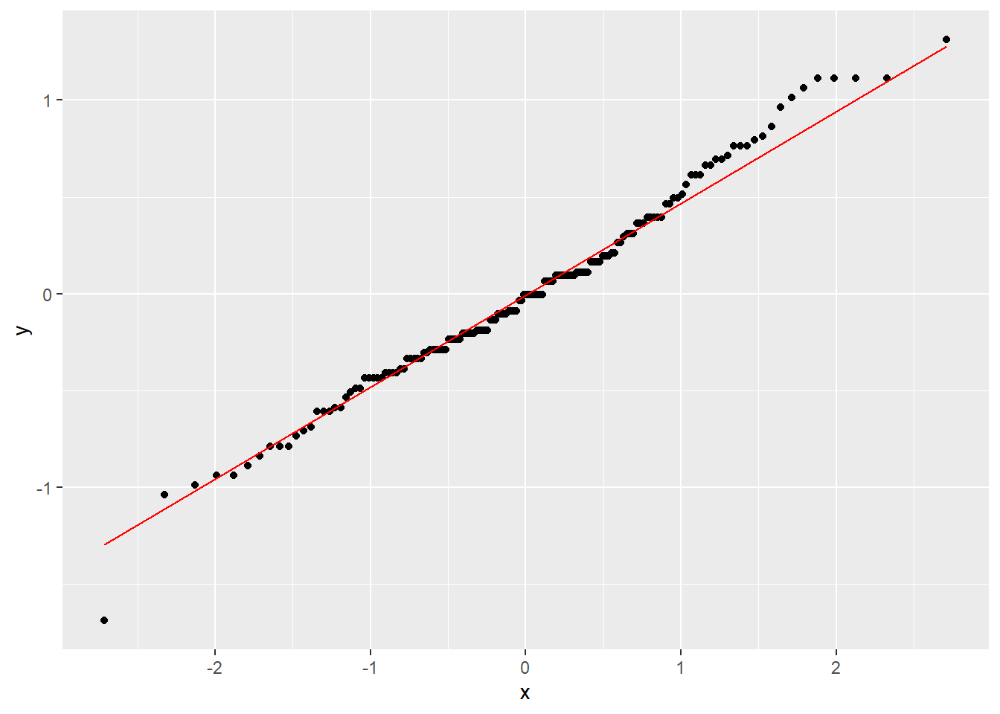
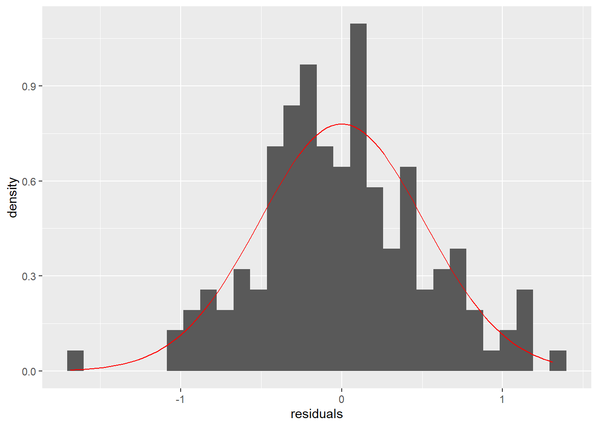
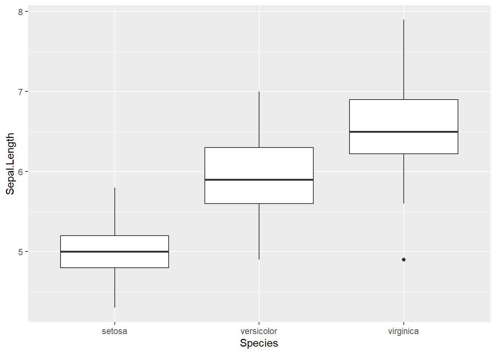

Kaip rinktis ANOVA?
Kada rinktis ANOVA?
ANOVA galima rinktis tokiu atveju, kai turime 3 arba daugiau kategorijų nepriklausomame kintamajame, pagal kurias norime palyginti tolydų priklausomą kintamąjį. Pavyzdžiui, norime palyginti, ar gerklės skausmo lygis skyrėsi priklausomai nuo to, ar buvo atlikta mažos, vidutinės ar didelės apimties operacija. Tokių atvejų pasitaiko dažnai, bet ne kiekvienas žino, ką daryti, jeigu ANOVA rezultatas yra statistiškai reikšmingas.
ANOVA prielaidų tikrinimas
Vienpusė ANOVA
Vienpusė ANOVA reiškia, jog turime tolydų kintamąjį (ūgį, svorį, amžių) ir jų norime palyginti tarp 3 arba daugiau grupių.
Šaltiniai:
Dvipusė ANOVA
Post-hoc testai
Jeigu mūsų ANOVA rezultatas buvo statistiškai reikšmingas, vis dar nežinome, kuri pora grupių tarpusavyje turėtų statistiškai reikšmingą skirtumą. Tam turime atlikti post-hoc testą, t.y. testą, kuris parenka 2 subgrupes ir konkrečiai jas palygina.
Nėra vieno standarto, kaip būtinai reikia atlikti post-hoc testą, bet dažniausias pasirinkimas yra Tukey HSD (Honestly Significant Difference) testas. Su R tai galima atlikti naudojantis TukeyHSD funkcija:
Rodyti kodą
TukeyHSD(my.anova) Tukey multiple comparisons of means
95% family-wise confidence level
Fit: aov(formula = Sepal.Length ~ Species, data = iris)
$Species
diff lwr upr p adj
versicolor-setosa 0.930 0.6862273 1.1737727 0
virginica-setosa 1.582 1.3382273 1.8257727 0
virginica-versicolor 0.652 0.4082273 0.8957727 0Post-hoc testas nurodo, jog skirtumai buvo tarp visų 3 rūšių tarpusavyje, didžiausias skirtumas buvo tarp virginica ir setosa (vidutiniškai 1,58, 95% PI [1,34-1,83], p < 0,001).
3 vienpusės ANOVA poskoniai
Kai mūsų duomenų rinkinys yra subalansuotas, visi ANOVA tipai duos tokį patį rezultatą. Kai duomenų rinkinys yra nesubalansuotas (viena grupė turi daugiau matavimų negu kitos)
Ar ANOVA buvo tinkamas testas?
Stjudento t-testo tinkamumą praktiniais sumetimais galime numatyti iš anksto, nors teisingas būdas tikrinti būtų toks kaip ir ANOVA atveju. ANOVA turi tris reikalavimus:
Likutinių verčių (paklaidų) pasiskirstymas turi būti pagal Normalųjį skirstinį. Mažai kas tai tikrina iš tikrųjų ir dažniausiai naudoja histogramas (ok), QQ grafikus (gerai) arba Shapiro-Wilk testą (blogai!)
Variacija turi būti homogeniška. ANOVA daro prielaidą, jog visos 3 grupės turi panašią visos populiacijos variaciją.
Nepriklausomi matavimai. Kaip ir Stjudento t-testo atveju, individualūs matavimai neturi būti kaip nors susiję.
Homogeniška variacija
Homogenišką variaciją galima patikrinti su Levene testu, Brown-Forsythe testu arba Bartlett testu, mes panaudosime Levene testą. Levene testas yra paprastas tuo, jog jis atlieka panašų testą kaip ANOVA, bet ne su priklausomu kintamuoju, o su absoliučiu nuokrypiu nuo grupės vidurkio. Levene testą su R galima atlikti taip (atsiprašau, Excel vartotojai!):
Rodyti kodą
leveneTest(my.anova)Levene's Test for Homogeneity of Variance (center = median)
Df F value Pr(>F)
group 2 6.3527 0.002259 **
147
---
Signif. codes: 0 '***' 0.001 '**' 0.01 '*' 0.05 '.' 0.1 ' ' 1Levene testas rodo, jog mes sulaužėme homogeniškos variacijos prielaidą ir tokiu būdu didiname klaidingai teigiamo rezultato tikimybę.
Pasiskirstymas pagal normalųjį skirstinį
Prieš tikrindami, ar mūsų likutinės reikšmės (nepaaiškinta variacija ANOVA modelio) pasiskirsto pagal normalųjį skirstinį, turime iš ANOVA modelio jas išsitraukti, o tada vizualizuoti arba tikrinti su Shapiro-Wilk testu.
Rodyti kodą
my.anova.residuals <- data.frame(residuals = residuals(object = my.anova))Rodyti kodą
ggplot(my.anova.residuals, aes(sample = residuals)) + stat_qq() + stat_qq_line(color = "red")
Rodyti kodą
ggplot(my.anova.residuals, aes(x = residuals)) + geom_histogram(aes(y = ..density..)) + stat_function(
fun = dnorm, color = "red",
args = with(my.anova.residuals, c(mean = mean(residuals), sd = sd(residuals)))
)
Rodyti kodą
shapiro.test(my.anova.residuals$residuals)
Shapiro-Wilk normality test
data: my.anova.residuals$residuals
W = 0.9879, p-value = 0.2189Deja, atitikmens Excel atveju nėra!
Kaip pavaizduoti ANOVA rezultatą?
Tinkamiausias būdas vizualizuoti ANOVA rezultatą yra su stačiakampe diagrama:
Rodyti kodą
ggplot(iris, aes(x = Species, y = Sepal.Length)) + geom_boxplot()